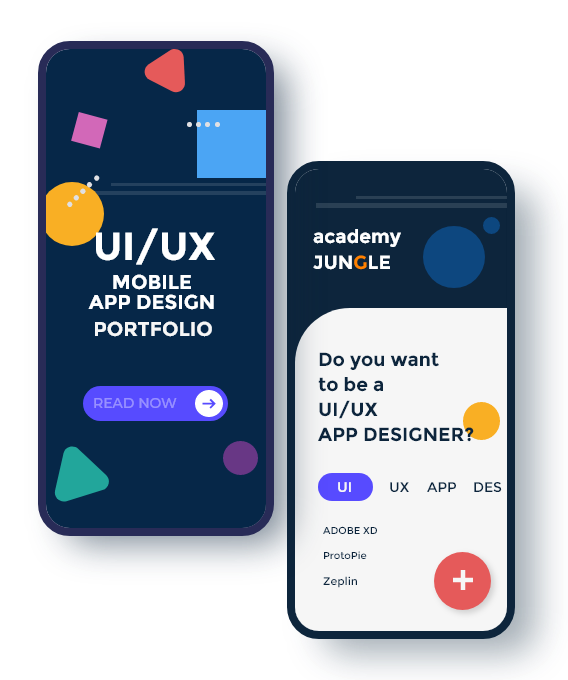

UI/UX
MOBILE APP DESIGN
PORTFOLIO
취업/이직 준비생
포트폴리오 제작
8주/16강
모바일 앱 디자인을 위한
UI/UX 기본 지식 함양 및
디자인 툴 Adobe XD, ProtoPie를
활용한 모바일 앱 디자인
실습 과정입니다.

- 교육일정
- 2020.09.21 - 2020.11.16
- 교육시간
- 월, 수 / 19:00 - 21:50
- 교육장소
- 아카데미정글 (강남 신사)
- 수 강 료
- 총 96만원 / 월 48만원
- 준 비 물
- 개인 노트북(권장)